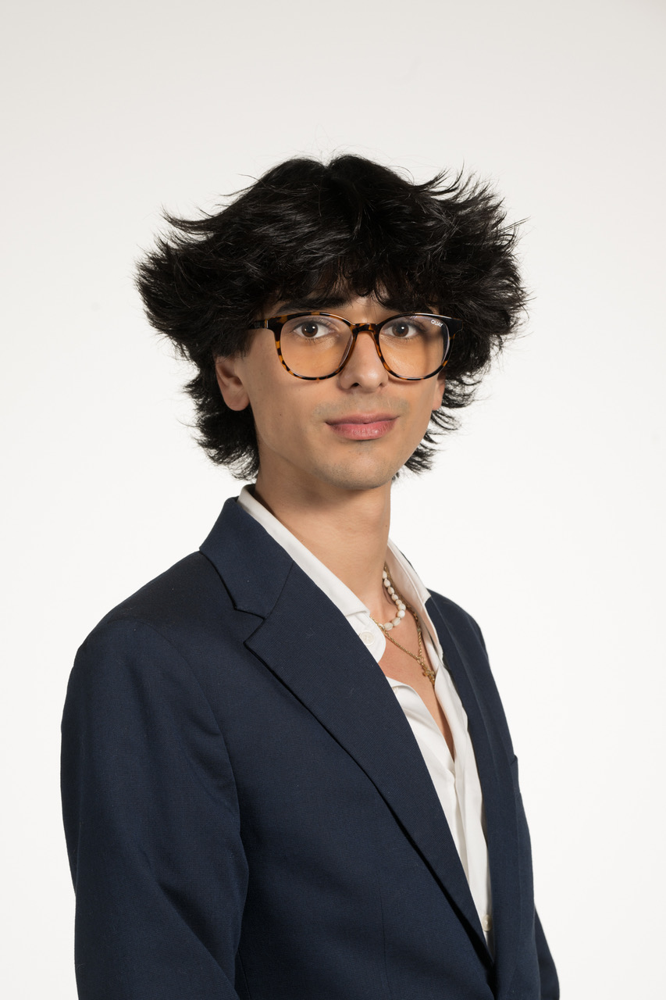

Welcome to my Portfolio!
I am Avelino J. Cortina IV, a driven design student with a profound passion for both architecture and diverse design disciplines. My academic journey has honed my expertise in understanding the intricate balance between form and function. Within the expansive realm of design, I specialize in the intersection of usability and aesthetics, delving into the spheres of user experience, UI/UX, product, and software design.
My portfolio serves as a testament to my versatile skill set, highlighting my ability to seamlessly transition between architectural projects, graphic design, and intuitive user interface creations. Each endeavor I undertake is characterized by meticulous attention to detail and a deep-seated commitment to purpose-driven design. I firmly believe that design should not only be visually appealing but also seamlessly integrate into the fabric of people's lives, enhancing their daily experiences with effortless convenience.
My creative approach is grounded in the philosophy of designing with intent, ensuring that every project I undertake has a tangible impact on the end-user. Through thoughtful and innovative design solutions, I strive to craft experiences and spaces that resonate with individuals on a meaningful level. My ultimate goal is to create designs that not only meet the needs of users but also elevate their quality of life.
I invite you to explore my portfolio, a curated collection that exemplifies my dedication to excellence and innovation. Together, let us embark on a journey to redefine the boundaries of design, where functionality harmonizes seamlessly with elegance, enriching lives in the process.